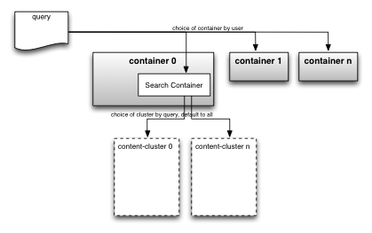
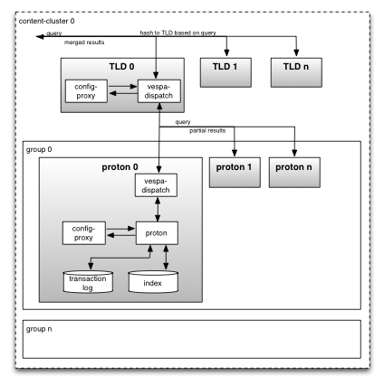

This document details how information moves through a Vespa system.
By "querying from an application" we mean an action by a user to search through the set of documents that has already been fed to and indexed. The query exists as a human readable string similar to what any user of a search engine could write.
Information moves through the system according to figure 3:
qrs-binary itself.
This includes narrowing down of the search, such as stemming and geo-tagging.

Figure 3: Information flow in Vespa when querying from an application
At this point the query enters one or more search clusters, and information flows according to figure 4:
vespa-dispatch)
is run by the vespa-config-sentinel.
This service subscribes to its configuration from the local config-proxy,
and its primary task is to relay the query such that it covers the entire document base,
with the lowest possible maximum load on its relevant search nodes.
The TLD knows what queries are being processed and at which nodes,
and load balancing is done by dispatching to the node with the lowest number of running queries.
vespa-dispatch).
This dispatcher allocates search threads in binary
vespa-proton to perform a search in the local index for the query.
The two modes of the vespa-dispatch binary are separable in the log files by their entry;
the search node writes:
(...) searchnode.dispatch0.dispatch vespa-dispatch (...)whereas the top level dispatcher writes:
(...) topleveldispatch vespa-dispatch (...)
vespa-proton searches its memory index or the local disk index files in
$VESPA_HOME/var/db/vespa/search/ and returns its results back to the local dispatcher.

Figure 4: Information flow in Vespa when querying from an application, detail of search cluster